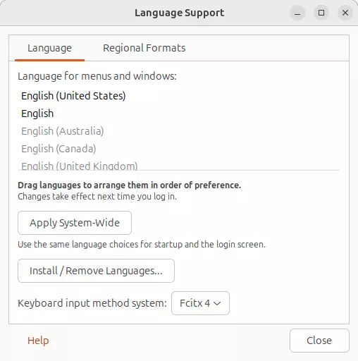
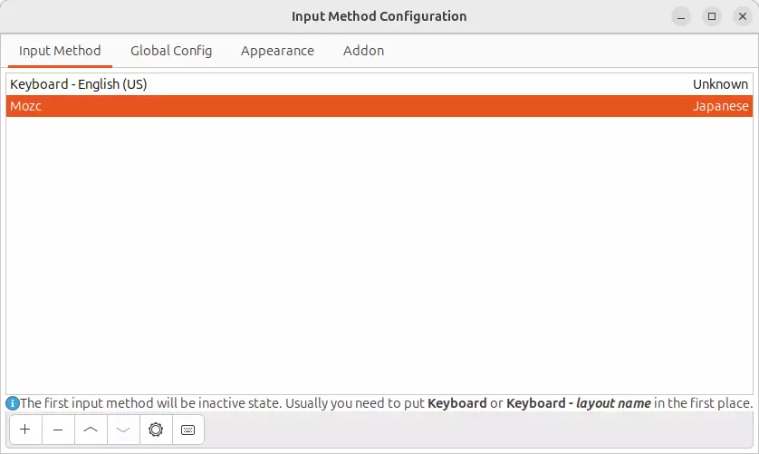
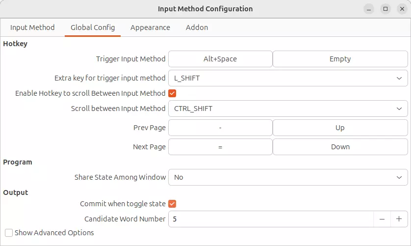
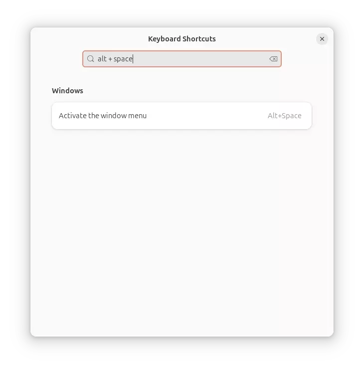
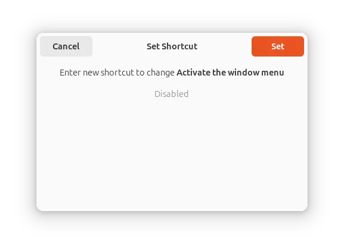

Ubuntu 24.04 (Noble Numbat) を導入します！
以下、最初しかやらない、忘れやすい設定の備忘録。
USB installer image
checksum:
$ cat SHA256SUMS
81fae9cc21e2b1e3a9a4526c7dad3131b668e346c580702235ad4d02645d9455 *ubuntu-24.04-desktop-amd64.iso
$ sha256sum -c SHA256SUMS
ubuntu-24.04-desktop-amd64.iso: OK
Create USB:
$ sudo dd bs=32MB if=ubuntu-24.04-desktop-amd64.iso of=/dev/sda
設定
Caps Lock as Ctrl
$ sudo apt-get install gnome-tweak-tool
$ gnome-tweak
Check Caps Lock as Ctrl
wayland を無効化する
ubuntu 22.04 同様に wayland を無効化しました。
-
/etc/gdm3/custom.confに以下を追記し、 wayland を無効化します:WaylandEnable=false
再起動
mozc （日本語入力）を使えるようにする
-
mozc を入れる:
$ sudo apt install fcitx-mozc -
Settings / Reagion & Language から Manage Installed Languages を選択し、 Language Support で Keyboard input method system を
Fxitx 4にする:
-
ibus を削除:
$ sudo apt purge ibus再起動すると fcitx が動くようになる。
-
Fcitx Configuration を起動し、 mozc を追加する:

-
キーバンドを、
Alt+Spaceにする:
-
Settings / Keyboard / View and Customize Shortcuts で Alt+Space を Disable にする:
 
Chrome
$ wget https://dl.google.com/linux/direct/google-chrome-stable_current_amd64.deb && sudo apt install ./google-chrome-stable_current_amd64.deb
Tailscale
$ curl -fsSL https://tailscale.com/install.sh | sh